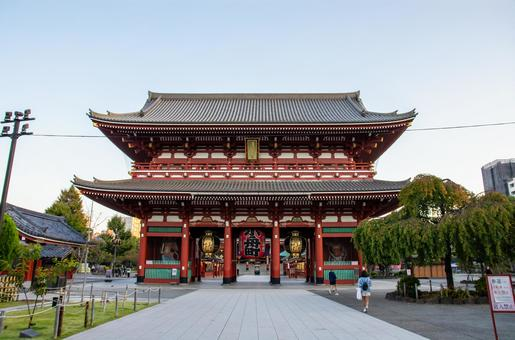
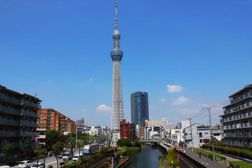
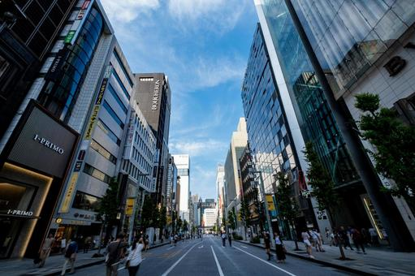
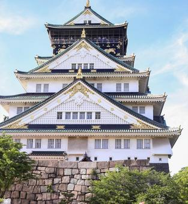
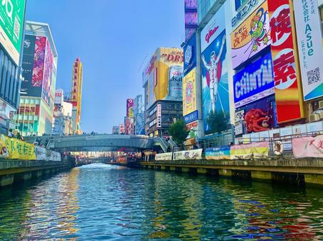
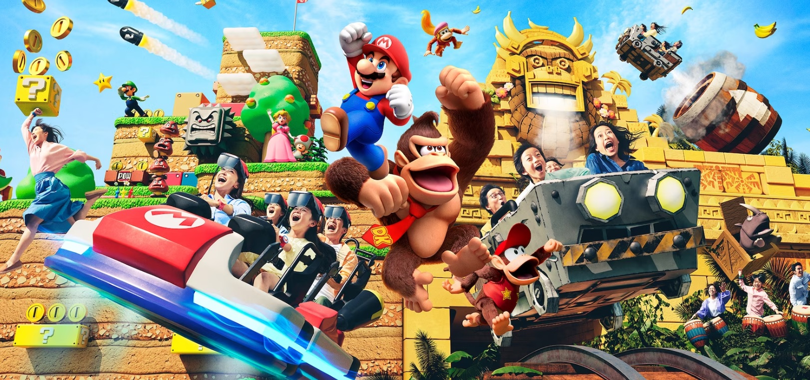

- TOKYO

- SENSO-JI
- Es un templo budista localizado en Asakusa, Tokio, Japón. Es el templo más antiguo de Tokio y uno de los más importantes.by wikipedia

- TOKYO SKYTREE
- es una torre de radiodifusión, restaurante y mirador construida en Sumida, Tokio, Japón. Es la estructura artificial más alta en Japón desde 2010.by wikipedia

- GINZA
- Es un distrito de abolengo del barrio de Tokyo y es famoso por la concentración de grandes almacenes, boutiques y restaurantes.by wikipedia
- OSAKA

- CASTILLO DE OSAKA
- Uno de los castillos más famosos del país y desempeñó un papel importante en la unificación de Japón durante el período del siglo xvi.by wikipedia

- DOTONBORI
- Es una de las principales avenidas de Osaka. Se trata del mayor centro comercial y turístico de la ciudad, conocido por su vida nocturna, carteles luminosos y múltiples restaurantes.by wikipedia

- UNIVERSAL STUDIO JAPAN
- Uno de los paques de atracciones más famoso de Japón. Las más populares son Mágico mundo de Harry Potter, Super Nintendo World y Donkey Kong.foto:https://www.usj.co.jp/web/ja/jp/areas/super-nintendo-world
- Sobre nosotros
- Política de privacidad
- Condiciones de reserva
- Sobre nosotros
- Contacto